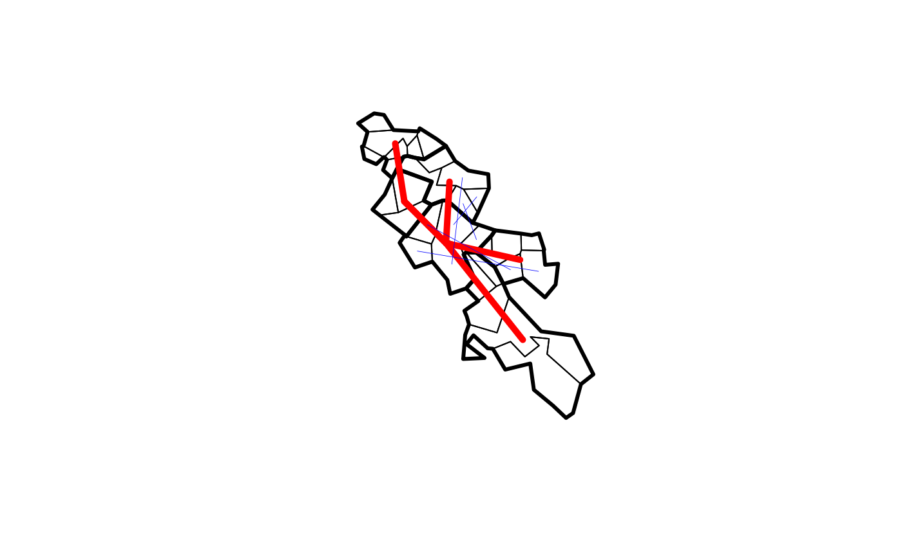

An introduction to origin-destination data
A practical demonstration with the R package od
Robin Lovelace and Edward Leigh
Source:vignettes/od.Rmd
od.RmdIntroduction: what is OD data?
As the name suggests, origin-destination (OD) data represents
movement through geographic space, from an origin (O) to a destination
(D). Sometimes also called ‘flow
data’, OD datasets contain details of trips between two geographic
points or, more commonly, zones (which are often represented by a zone
centroid). Most OD datasets refer to start and end locations with ‘ID’
columns containing character strings such as zone1. These
IDs refer to a geographic feature in a separate geographic dataset.
Origin and destination locations are sometimes represented as geographic
coordinates.
OD datasets typically contain multiple non geographic attributes. These usually include, at a minimum, the number of trips that take place from the origin to the destination over a given time period (e.g. a typical work day). Additional attributes can include breakdown by the mode(s) of transport used for the trips. Usually only a single mode is captured (trips made by a combination of cycle-train-walk modes are often counted only as ‘train’ trips). Additional disaggregations of overall counts may include trip counts at different time periods.
Many OD datasets omit information. If there is only one time period, then this resides in the metadata for the whole data set. There is rarely any information about the path taken between the start and end points. It is typically the job of the analyst to use a routing service (such as OSRM, Google Directions API, CycleStreets.net or OpenRouteService) or an assignment model to identify likely routes with reference to shortest path algorithms or generalised cost minimisation algorithms (which account for monetary plus time and quality ‘costs’).
The importance of OD data
Despite the rather dull name, OD datasets are a vital part of the modern world: they underpin analysis and models that influence current and future transport systems. Historically, these models, and the OD datasets that drove them, were used to plan for car-dominated cities (Boyce and Williams 2015). Now that there is growing evidence of the negative impacts car domination, however, there is a strong argument for transport models being repurposed. Origin-destination data can be part of the solution.
From a health perspective transport planning, supported by OD data and analysed primarily using proprietary software and opaque methods, has failed: roads are now the largest cause of death of young people worldwide, killing more than 1 million people each year (World Health Organization 2018). Even ignoring problems such as air pollution, obesity and climate change, it is clear that current transport systems are unsustainable. There are other reasons why transport data analysis and software are important (Lovelace and Ellison 2018).
The purpose of this vignette is to introduce OD data, an important component of many transport planning models, with examples based on data and functions from the stplanr package. The aim is to enable you to use OD data to inform more sustainable transport plans, for example by identifying ‘desire lines’ along which policies could cause a modal switch away from cars and towards lower energy modes such as walking, cycling, and public transport.
The od package
The od package was developed to provide a unified set of
functions for representing, transforming and working OD data. Like the
stats19 and cyclestreets packages,
od started life as functions in the stplanr
package, which provides methods for working with a range of transport
datasets, focussed on geographic representations and sustainable modes
(Lovelace and Ellison 2018).
Install and load the package as follows:
install.packages("od")
# remotes::install_github("itsleeds/od") # for the dev versionRepresenting origin-destination data
OD data can be accessed from a range of sources (we will see code that downloads many thousands of OD pairs later in this vignette). Some ‘data carpentry’ may be needed before the OD data is ready for analysis. This vignette does not cover cleaning OD data: we assume you know R and come with ‘tidy’ data (Wickham 2014), in which each row represents travel between an origin and a destination (typically zones represented by zone IDs), and each column represents an attribute such as number of trips or vehichle counts by mode or straight line distance.1
A minimal od dataset
At its most basic, a single trip can be OD data, as illustrated in the simple example dataset below. The concept can be illustrated by an example of travel between two cities. As mentioned above, OD data is a data frame that contains at least two columns, one representing an origin and one representing a destination. The code below creates a data frame with one row representing movement between the cities of Leeds and London:
od_data_example = data.frame(
o = "Leeds",
d = "London"
)
od_data_example
#> o d
#> 1 Leeds LondonMost OD datasets have attributes associated with movement between the two places. In this case we can represent the number of trips I make from Leeds to London per year with a new column as follows:
od_data_example$trips_per_year = 10
od_data_example
#> o d trips_per_year
#> 1 Leeds London 10Furthermore, if we have geographic representations of the origin and
destination datasets, in a separate object called p (short
for points) we can create a geographical representation of the data as
follows:
p = sf::st_as_sf(
data.frame(
name = c("Leeds", "London"),
lon = c(-1.5, -0.1),
lat = c(53.8, 51.5)
),
coords = c("lon", "lat"),
crs = 4326
)
p
#> Simple feature collection with 2 features and 1 field
#> Geometry type: POINT
#> Dimension: XY
#> Bounding box: xmin: -1.5 ymin: 51.5 xmax: -0.1 ymax: 53.8
#> Geodetic CRS: WGS 84
#> name geometry
#> 1 Leeds POINT (-1.5 53.8)
#> 2 London POINT (-0.1 51.5)This can be plotted as follows (result from mapview shown):
plot(p)
mapview::mapview(p)
The plot above shows that OD datasets are fundamentally geographic,
although they are not always represented geographically. To convert the
non-geographic OD dataset into a geographic object, we can use the
od_to_sf() function from the od package as
follows:
desire_line_example = od_to_sf(od_data_example, p)
#> 0 origins with no match in zone ids
#> 0 destinations with no match in zone ids
#> points not in od data removed.
desire_line_example
#> Simple feature collection with 1 feature and 3 fields
#> Geometry type: LINESTRING
#> Dimension: XY
#> Bounding box: xmin: -1.5 ymin: 51.5 xmax: -0.1 ymax: 53.8
#> Geodetic CRS: WGS 84
#> o d trips_per_year geometry
#> 1 Leeds London 10 LINESTRING (-1.5 53.8, -0.1...We just converted the data frame into a ‘geographic data frame’, with the origin-destination data represented geographically as a straight ‘desire line’ between the origin and destination point. This can be useful for many things, not least visualisation, as shown below:
mapview::mapview(desire_line_example)
OD data representing travel to work
This next example uses a small dataset that comes pre-loaded with the
package, called od_data_df. We will copy it into an object
called od to be concise, and to highlight the fact that
these operations can be generalised to many OD datasets.
# example data from the od package:
od = od::od_data_df
class(od)
#> [1] "data.frame"Like all data, the object od, created in the preceding
code chunk, comes from a specific context, the 2011 UK Census
questions:
- In your main job, what is the address of your workplace?
- How do you usually travel to work (for the longest part, by
distance, of your usual journey to work)?
- Work mainly at or from home
- Underground, metro, light rail, tram
- Train
- …
od is an origin-destination dataset represented as a
data frame containing aggregated answers to these questions (see
?pct::get_od() for details). It is implicitly
geographic: the first two columns refer to geographic entities but
do not contain coordinates themselves (OD coordinates are covered
below). Other columns contain attributes associated with each OD pair,
typically counting how many people travel by mode of transport, as shown
by printing the contents of od:
od
#> geo_code1 geo_code2 all train bus taxi car_driver car_passenger bicycle foot
#> 1 E02002384 E02006875 966 14 153 14 69 18 13 679
#> 2 E02002404 E02006875 1145 6 174 17 96 38 10 798
#> 3 E02006875 E02006875 1791 21 38 5 69 7 8 1637
#> 4 E02006876 E02006875 1035 11 132 6 97 24 10 749
#> 5 E02006861 E02002392 453 1 51 0 51 6 26 317
#> 6 E02006875 E02002392 286 2 15 5 16 2 10 235
#> 7 E02002392 E02006875 753 10 91 21 33 7 19 571OD data can be represented in a number of ways, as outlined in the next sections.
Origin-destination pairs (long form)
The most common way of representing OD data in the 21st
century is the ‘long’ data frame format described above. This is
increasingly the format used by official statistical agencies, including
the UK’s Office for National Statistics (ONS), who provide origin
destination data as a .csv file. Typically, the first
column is the zone code of origin and the second column is the zone code
of the destination, as is the case with the object od.
Subsequent columns contain attributes such as all, meaning
trips by all modes, as illustrated below (we will see a matrix
representation of this subset of the data in the next section):
od[1:3]
#> geo_code1 geo_code2 all
#> 1 E02002384 E02006875 966
#> 2 E02002404 E02006875 1145
#> 3 E02006875 E02006875 1791
#> 4 E02006876 E02006875 1035
#> 5 E02006861 E02002392 453
#> 6 E02006875 E02002392 286
#> 7 E02002392 E02006875 753geo_code1 refers to the origin, geo_code2
refers to the destination.
Additional columns can represent addition attributes, such as number
of trips by time, mode of travel, type of person, or trip purpose. The
od dataset contains column names representing mode of
travel (train, bus, bicycle etc), as can be seen with
names(od[-(1:2)]). These ‘mode’ columns contain integers in
the example data, but contain characters, dates and other data types,
taking advantage of the flexibility of data frames.
Origin destination matrices
The ‘OD matrix’ representation of OD data represents each attribute
column in the long form as a separate matrix. Instead of rows
representing OD pairs, rows represent all travel from each origin to all
destinations (represented as columns). The stplanr
function od_to_odmatrix() converts between the ‘long’ to
the ‘matrix’ form on a per column basis, as illustrated below:
od_matrix = od_to_odmatrix(od[1:3])
class(od_matrix)
#> [1] "matrix" "array"
od_matrix
#> E02006875 E02002392
#> E02002384 966 NA
#> E02002404 1145 NA
#> E02006875 1791 286
#> E02006876 1035 NA
#> E02006861 NA 453
#> E02002392 753 NANote that row and column names are now zone codes. The cell in row 1
and column 2 (od_matrix[1, 2]), for example, reports that
there are 94 trips from zone E02002361 to zone
E02002393. In the case above, no people travel between the
majority of the OD pair combinations, as represented by the
NAs. OD matrices are a relatively rudimentary data
structure that pre-date R’s data.frame class. Typically,
they only contained integer counts, providing small and simple datasets
that could be used in 20th Century transport modelling
software running on limited 20th Century hardware.
Although ‘OD matrix’ is still sometimes used informally to refer to any OD datadset, the long OD pair representation is recommended: OD matrices become unwieldy for large OD datasets, which are likely to be sparse, with many empty cells represented by NAs. Furthermore, to represent many attributes in matix format, multiple lists of OD matrices or ‘OD arrays’ must be created. This is demonstrated in the code chunk below, which represents travel between OD pairs by all modes and by bike:
lapply(c("all", "bicycle"), function(x) od_to_odmatrix(od[c("geo_code1", "geo_code2", x)]))
#> [[1]]
#> E02006875 E02002392
#> E02002384 966 NA
#> E02002404 1145 NA
#> E02006875 1791 286
#> E02006876 1035 NA
#> E02006861 NA 453
#> E02002392 753 NA
#>
#> [[2]]
#> E02006875 E02002392
#> E02002384 13 NA
#> E02002404 10 NA
#> E02006875 8 10
#> E02006876 10 NA
#> E02006861 NA 26
#> E02002392 19 NAThe function odmatrix_to_od() can convert OD matrices
back into the more convenient long form:
odmatrix_to_od(od_matrix)
#> orig dest flow
#> 1 E02002384 E02006875 966
#> 6 E02002392 E02006875 753
#> 2 E02002404 E02006875 1145
#> 11 E02006861 E02002392 453
#> 9 E02006875 E02002392 286
#> 3 E02006875 E02006875 1791
#> 4 E02006876 E02006875 1035Inter and intra-zonal flows
A common, and sometimes problematic, feature of OD data is ‘intra-zonal flows’. These are trips that start and end in the same zone. The proportion of travel that is intra-zonal depends largely on the size of the zones used. It is often useful to separate intra-zonal and inter-zonal flows at the outset, as demonstrated below:
(od_inter = od_interzone(od))
#> geo_code1 geo_code2 all train bus taxi car_driver car_passenger bicycle foot
#> 1 E02002384 E02006875 966 14 153 14 69 18 13 679
#> 2 E02002404 E02006875 1145 6 174 17 96 38 10 798
#> 4 E02006876 E02006875 1035 11 132 6 97 24 10 749
#> 5 E02006861 E02002392 453 1 51 0 51 6 26 317
#> 6 E02006875 E02002392 286 2 15 5 16 2 10 235
#> 7 E02002392 E02006875 753 10 91 21 33 7 19 571
(od_intra = od_intrazone(od))
#> geo_code1 geo_code2 all train bus taxi car_driver car_passenger bicycle foot
#> 3 E02006875 E02006875 1791 21 38 5 69 7 8 1637Intra-zonal OD pairs represent short trips (up to the size of the zone within which the trips take place) so are sometimes ignored in OD data analyis. However, intra-zonal flows can be valuable, for example in measuring the amount of localised transport activity and as a sign of local economic activity.
Bidirectional aggregation
Another subtly with some (symetric,
where origins and destinations can be the same points) OD data is that
oneway flows can hide the extent of bidirectional flows in plots and
other types of analysis. This is illustrated below for a sample of the
od dataset:
(od_min = tail(od, 3))
#> geo_code1 geo_code2 all train bus taxi car_driver car_passenger bicycle foot
#> 5 E02006861 E02002392 453 1 51 0 51 6 26 317
#> 6 E02006875 E02002392 286 2 15 5 16 2 10 235
#> 7 E02002392 E02006875 753 10 91 21 33 7 19 571
(od_oneway = od_oneway(od_min))
#> o d all train bus taxi car_driver car_passenger bicycle foot
#> 1 E02002392 E02006861 453 1 51 0 51 6 26 317
#> 2 E02002392 E02006875 1039 12 106 26 49 9 29 806Note that in the second dataset there are only 2 rows instead of 3.
The function od_oneway() aggregates oneway lines to produce
bidirectional flows. By default, it returns the sum of each numeric
column for each bidirectional origin-destination pair.
Desire lines
The previous representations of OD data are all implicitly geographic: their coordinates are not contained in the data, but associated with another object that is geographic, typically a zone or a zone centroid. This is problematic, meaning that multiple objects or files are required to fully represent the same data. Desire line representations overcome this issue. They are geographic lines between origin and destination, with the same attributes as in the ‘long’ representation.
od_to_sf() can convert long form OD data to desire
lines. The second argument is a zone or a centroid dataset that contains
‘zone IDs’ that match the IDs in the first and second columns of the OD
data, as illustrated below:
z = od::od_data_zones_min
class(z)
#> [1] "sf" "data.frame"
desire_lines = od_to_sf(od_inter, z)
#> 0 origins with no match in zone ids
#> 0 destinations with no match in zone ids
#> points not in od data removed.The preceding code chunk created a zones object called
z, the coordinates of which were used to convert the object
od into desire_lines, which are geographic
desire lines. The desire line object is stored in as a geographic simple
features object, which has the same number of rows as does the object
od and one more column:
class(desire_lines)
#> [1] "sf" "data.frame"
nrow(od) - nrow(desire_lines)
#> [1] 1
ncol(desire_lines) - ncol(od)
#> [1] 1The new column is the geometry column, which can be plotted as follows:
plot(desire_lines$geometry)By default, plotting desire_lines shows the attributes
for each line:
plot(desire_lines)Because these lines have a coordinate reference system (CRS)
inherited from the zones data, they can also be plotted on an
interactive map, as follows (result not shown, requires the
tmap package):
Non-matching IDs
Note that in some OD datasets there may be IDs that match no zone. We
can simulate this situation by setting the third origin ID of
od to nomatch, a string that is not in the
zones ID:
od_geo_code2_3 = od$geo_code2[3]
od$geo_code2[3] = "nomatch"
od_to_sf(od, z)
#> 0 origins with no match in zone ids
#> 1 destinations with no match in zone ids
#> points not in od data removed.
#> Simple feature collection with 6 features and 10 fields
#> Geometry type: LINESTRING
#> Dimension: XY
#> Bounding box: xmin: -1.564756 ymin: 53.77475 xmax: -1.517695 ymax: 53.81763
#> Geodetic CRS: WGS 84
#> geo_code1 geo_code2 all train bus taxi car_driver car_passenger bicycle foot
#> 1 E02002384 E02006875 966 14 153 14 69 18 13 679
#> 2 E02002404 E02006875 1145 6 174 17 96 38 10 798
#> 3 E02006876 E02006875 1035 11 132 6 97 24 10 749
#> 4 E02006861 E02002392 453 1 51 0 51 6 26 317
#> 5 E02006875 E02002392 286 2 15 5 16 2 10 235
#> 6 E02002392 E02006875 753 10 91 21 33 7 19 571
#> geometry
#> 1 LINESTRING (-1.54473 53.809...
#> 2 LINESTRING (-1.51871 53.792...
#> 3 LINESTRING (-1.517695 53.77...
#> 4 LINESTRING (-1.564756 53.81...
#> 5 LINESTRING (-1.546024 53.79...
#> 6 LINESTRING (-1.561391 53.80...Note the message saying that the non-matching row was removed (the
equivalent code from the stplanr package generated an error
message). It’s worth checking/cleaning your OD data and ensure all ids
in the first two columns match the ids in the first column of the zone
data before running od_to_sf().
od$geo_code2[3] = od_geo_code2_3Aggregating and disaggregating OD data
The data shown in the previous examples is quite low resolution.
Imagine you want to split each desire line into multiple lines, e.g. for
some kind of simulation. You can do this by assigning origins and
destinations to specific subzones with od_disaggregate()
(also called od_split()):
od = od_data_df[1:2, c(1, 2, 9, 4)]
subzones = od_data_zones_small
od_disaggregated = od_disaggregate(od, z, subpoints = subzones, max_per_od = 5)
#> Converting polygons to points
#> Warning: st_centroid assumes attributes are constant over geometries
plot(od_data_zones_min$geometry, lwd = 3)
plot(od_data_zones_small$geometry, lwd = 1, add = TRUE)
plot(desire_lines$geometry, lwd = 5, col = "red", add = TRUE)
plot(od_disaggregated$geometry, lwd = 0.4, col = "blue", add = TRUE)
# plot(od_disaggregated$geometry[1:5])This preserves column totals:
sapply(3:4, function(i) sum(od[[i]]))
#> [1] 23 20
sapply(3:4, function(i) sum(od_disaggregated[[i]]))
#> [1] 23 20This also allows the simulation of building-to-building travel.
od_disaggregated2 = od_disaggregate(od, z, subpoints = od_data_buildings)
#> Converting polygons to points
#> Warning: st_centroid assumes attributes are constant over geometries
plot(od_data_buildings$geometry)
plot(od_disaggregated2$geometry, add = TRUE, lwd = 0.1)Further reading
Despite the importance of origin-destination datasets for transport research, there are few guides dedicated to working with them using open source software. The following suggestions are based on my own reading — if you have any other suggestions of good resources for working with OD data, let me know!
- Section 12.4 of Geocomputation with R (Lovelace, Nowosad, and Muenchow 2019) puts OD data in the wider context of geographic transport data.
- Martin et al. (2018) describe methods for classifying OD pairs based on demographic data.
- The kepler.gl website provides a nifty web application for visualising OD data.
- Documentation for the open source microscopic transport modelling software SUMO describes ways of reading-in OD file formats not covered in this vignette.
- An excellent introduction to modelling and visualising OD data in
the introductory
vignette of the
flowsR package.
References
It may be difficult to convert between ‘number of trip’ and ‘number of vehicle’ counts for modes in which a single vehicle can contain many people, such as cars (a problem that can be overcome when surveys differentiate between car driver and ‘car passenger’ as distinct modes), buses and trams if occupancy levels are unknown. Typically OD data only report single stage trips, but multi-modal trips such as walk-rail-cycle can be represented when such a combination of modes is represented by a new, unique, mode.↩︎